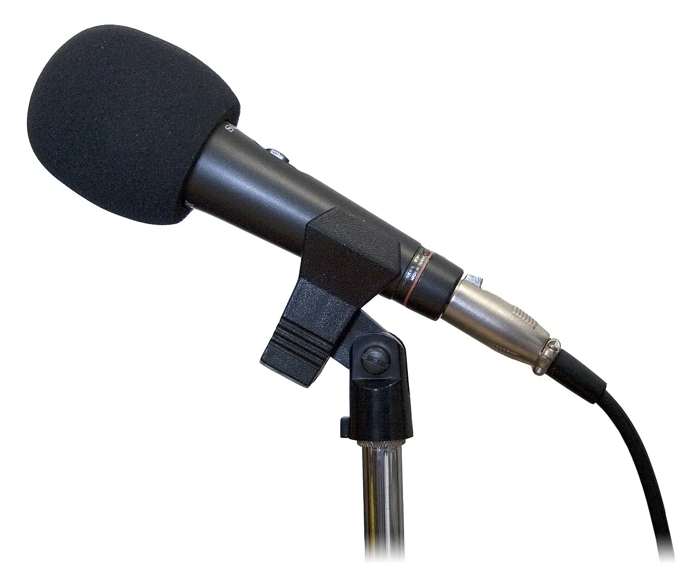

목소리는 데이터가 아닙니다

AI 보컬 음악은 이미 낯선 기술이 아닙니다. 유명 가수의 음색처럼 들리는 커버곡과 새 노래가 온라인에서 빠르게 퍼지고 있습니다. 문제는 기술이 그럴듯해질수록 목소리가 단순한 학습 데이터로 취급되기 쉽다는 점입니다. 가수의 목소리는 음악 활동의 핵심 자산이고, 팬이 기억하는 정체성입니다.
저작권은 노래의 멜로디와 가사, 음원 권리를 다루지만 목소리 자체의 권리는 더 복잡합니다. 실제 가수가 부르지 않았는데 가수처럼 들리는 음원이 광고 수익을 얻거나 팬을 혼동시키면 누구의 허락이 필요한지 묻지 않을 수 없습니다. 기술보다 계약과 표시가 먼저 필요한 이유입니다.
가수와 소속사는 자신의 목소리가 어떤 범위에서 쓰이는지 통제하고 싶어 합니다. 추모 음원, 팬 서비스, 게임 캐릭터, 광고 삽입, 해외어 버전처럼 허용할 수 있는 영역이 다를 수 있습니다. 전면 금지와 전면 허용 사이에 세밀한 라이선스 구조가 필요합니다.
팬덤은 진짜 여부를 묻습니다
팬덤이 음악을 소비하는 방식은 음질만으로 결정되지 않습니다. 이 노래를 아티스트가 실제로 선택했는지, 가사가 세계관과 맞는지, 수익이 창작자에게 돌아가는지 중요하게 봅니다. AI 보컬이 아무리 자연스러워도 팬이 속았다고 느끼면 반발이 큽니다.
플랫폼의 표시 의무가 그래서 중요합니다. AI가 사용된 음원인지, 원 가수의 허락을 받았는지, 수익 배분이 어떻게 되는지 알 수 있어야 합니다. 작은 라벨 하나가 단순한 고지가 아니라 신뢰 장치가 됩니다. 숨기면 조회수는 나올 수 있어도 장기적으로 브랜드가 흔들립니다.
팬들은 새로운 시도를 싫어하기만 하는 것이 아닙니다. 공식적으로 허락받은 AI 보컬 프로젝트, 아티스트가 직접 참여한 실험, 공연 접근성을 넓히는 번역 음성은 받아들여질 수 있습니다. 기준은 기술이 아니라 관계입니다.
수익 배분이 시장을 정합니다
AI 보컬 음악이 산업으로 자리 잡으려면 돈의 흐름이 정리돼야 합니다. 원곡 저작권자, 실연자, 음색 제공자, 모델 개발자, 플랫폼이 모두 가치를 주장합니다. 지금은 조회수와 광고 수익이 먼저 움직이고 계약은 뒤따르는 경우가 많습니다.
수익 배분이 불투명하면 합법 시장이 커지기 어렵습니다. 가수가 자신의 목소리를 라이선스할 동기가 생기려면 사용 범위와 보상 방식이 분명해야 합니다. 팬 제작물과 상업 음원을 구분하고, 비상업적 이용에는 비교적 완화된 조건을 두는 방식도 검토될 수 있습니다.
플랫폼은 필터링과 신고 절차를 갖춰야 합니다. 무단 음성 복제물을 빠르게 찾고, 권리자가 삭제나 수익 배분을 요청할 수 있어야 합니다. 단순 삭제만으로는 창작 실험을 막을 수 있고, 무제한 허용은 권리 침해를 키웁니다. 균형 장치가 필요합니다.
새 음악은 계약 위에서 나옵니다
AI 보컬이 제대로 쓰이면 창작의 폭은 넓어질 수 있습니다. 작곡가는 데모를 빠르게 만들고, 가수는 여러 언어 버전을 시험하고, 청각장애나 접근성 서비스에도 활용할 수 있습니다. 그러나 이런 가능성은 권리자가 동의할 때 더 오래 갑니다.
음악 산업은 늘 기술과 함께 바뀌었습니다. 샘플링, 스트리밍, 숏폼 영상도 처음에는 충돌이 컸지만 결국 계약과 정산 체계가 만들어졌습니다. AI 보컬도 비슷한 길을 갈 가능성이 큽니다. 다만 목소리는 사람의 정체성과 훨씬 가까워 더 조심스러운 기준이 필요합니다.
앞으로 볼 지점은 법원 판결만이 아닙니다. 대형 기획사의 라이선스 정책, 플랫폼의 표시 방식, 음원 차트의 분류 기준, 팬덤의 반응이 함께 시장을 만듭니다. 기술이 충분해질수록 신뢰의 기준은 더 중요해집니다.
관련 영상
AI 커버곡, 진짜 가수의 목소리일까? 음악 저작권의 미래
AI 보컬 음악의 핵심은 얼마나 비슷하게 만들 수 있느냐가 아닙니다. 누가 허락했고, 누가 보상받으며, 팬이 무엇을 알고 듣는지가 시장을 정합니다. 목소리를 존중하는 계약이 있어야 기술도 문화가 됩니다.
AI 보컬 음악은 생성 기술보다 목소리 권리 계약이 먼저을 볼 때는 발표 직후의 반응보다 다음 분기까지 이어지는 숫자를 함께 확인하는 편이 좋습니다. 단기 뉴스는 방향을 빠르게 바꾸지만 실제 변화는 계약, 예산, 생산, 소비 습관처럼 느린 항목에서 굳어집니다. 이 차이를 나누어 보면 과장된 기대와 실제 지속 가능성을 구분할 수 있습니다.
가장 실용적인 점검 방법은 한 가지 지표에 기대지 않는 것입니다. 가격, 수요, 비용, 규제, 실행 시간이 같은 방향으로 움직이는지 확인해야 합니다. 어느 하나만 좋아도 나머지가 따라오지 않으면 결과는 늦어지고, 여러 조건이 동시에 맞으면 변화는 예상보다 빠르게 확산될 수 있습니다.
이 주제는 한 번의 결론보다 관찰 순서가 더 중요합니다. 먼저 현재 병목을 확인하고, 그다음 누가 비용을 부담하는지 보며, 마지막으로 그 부담이 가격이나 행동 변화로 이어지는지 봐야 합니다. 그렇게 읽으면 제목보다 구조가 먼저 보입니다.
AI 보컬 음악은 생성 기술보다 목소리 권리 계약이 먼저을 볼 때는 발표 직후의 반응보다 다음 분기까지 이어지는 숫자를 함께 확인하는 편이 좋습니다. 단기 뉴스는 방향을 빠르게 바꾸지만 실제 변화는 계약, 예산, 생산, 소비 습관처럼 느린 항목에서 굳어집니다. 이 차이를 나누어 보면 과장된 기대와 실제 지속 가능성을 구분할 수 있습니다.
가장 실용적인 점검 방법은 한 가지 지표에 기대지 않는 것입니다. 가격, 수요, 비용, 규제, 실행 시간이 같은 방향으로 움직이는지 확인해야 합니다. 어느 하나만 좋아도 나머지가 따라오지 않으면 결과는 늦어지고, 여러 조건이 동시에 맞으면 변화는 예상보다 빠르게 확산될 수 있습니다.
이 주제는 한 번의 결론보다 관찰 순서가 더 중요합니다. 먼저 현재 병목을 확인하고, 그다음 누가 비용을 부담하는지 보며, 마지막으로 그 부담이 가격이나 행동 변화로 이어지는지 봐야 합니다. 그렇게 읽으면 제목보다 구조가 먼저 보입니다.
AI 보컬 음악은 생성 기술보다 목소리 권리 계약이 먼저을 볼 때는 발표 직후의 반응보다 다음 분기까지 이어지는 숫자를 함께 확인하는 편이 좋습니다. 단기 뉴스는 방향을 빠르게 바꾸지만 실제 변화는 계약, 예산, 생산, 소비 습관처럼 느린 항목에서 굳어집니다. 이 차이를 나누어 보면 과장된 기대와 실제 지속 가능성을 구분할 수 있습니다.
가장 실용적인 점검 방법은 한 가지 지표에 기대지 않는 것입니다. 가격, 수요, 비용, 규제, 실행 시간이 같은 방향으로 움직이는지 확인해야 합니다. 어느 하나만 좋아도 나머지가 따라오지 않으면 결과는 늦어지고, 여러 조건이 동시에 맞으면 변화는 예상보다 빠르게 확산될 수 있습니다.